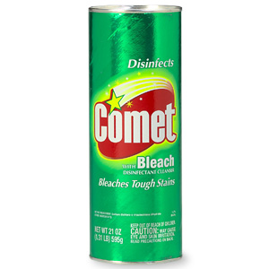

Why WebSockets?
HTTP 0.9
- 1991
- ASCII protocol, running over a TCP/IP link
- Request/Response
- Response limited to hypertext
- Connection closed
HTTP 1.0
- 1996 RFC-1945
- Headers
- Response not limited to hypertext
- Connection closed
HTTP 1.1
- RFC-2068 1997
- RFC-2016 1999
- Keep-alive
- Chunked encoding transfers
- Still half duplex
Simplex
Half-Duplex

Full-Duplex

HTTP
- Half duplex
- Request from client
- Response from server
- Has worked well
More advanced apps
These apps exist today

HTTP "Short" Polling
- Polls server using an interval
- Might poll unnessesariarly
- More network trafic
- Server resources involved to handle each poll
HTTP Long polling
- Server wait with response until it's available
- Server responds when data is available
- Client polls again
HTTP Streaming
- Maintains an open connection to server
- HTTP/1.1 chunks
Problems with Comet
- New connection to poll
- Header overhead
- Server resources for processing
- Latency. Data not be delivered until next poll
Server Sent Events
- HTTP
- Client initiated
- Event based
- Native to browser (where supported)
- Polyfill available
- Alternative if only server -> client needed
What do we want?
- Full-Duplex
- Less overhead
- Should work with current infrastructure
Solution: WebSocket
“two-way communication with servers that does not rely on opening multiple HTTP connections”
API and Protocol
WebSocket object
var ws = new WebSocket("ws://localhost:80/app");
- Browser creates a connection
- Browser sends a HTTP Upgrade request
- Will not block
HTTP Upgrade request
GET ws://localhost:80/app HTTP/1.1
Host: localhost:80
Origin: http://localhost
Upgrade: websocket
Connection: Upgrade
Sec-WebSocket-Version: 13
Sec-WebSocket-Key: r/9y5eS3shxHilVx0fVBcA==
- Origin
- Upgrade
- Connection
- Sec-WebSocket-Version
- Sec-WebSocket-Key
HTTP Upgrade response
HTTP/1.1 101 Switching Protocols
Connection: Upgrade
Upgrade: websocket
Sec-WebSocket-Accept: lluo2AIajFdtzn73RnauhvkCOvU=
Sec-WebSocket-Key
- base64(sha1(Sec-WebSocket-Key + GUID))
- How is this secure?
- It's not
Protocol Attack
- Protect non WebSocket servers
- Prevents the browser from opening connection using WebSocket object
- Browser will kill connection if Sec-WebSocket-Accept is not correct
Subprotocols
var ws = new WebSocket("ws://localhost:80/app", "custom.protocol");
Open Event
var ws = new WebSocket("ws://localhost:80/app");
ws.onopen = function() {
console.log("opened connection");
}
Close Event
var ws = new WebSocket("ws://localhost:80/app");
ws.onclose = function(e) {
console.log(e.wasClean);
console.log(e.code);
console.log(e.reason);
}
Error Event
var ws = new WebSocket("ws://localhost:80/app");
ws.onerror = function() {
console.log("Error occurred. Reconnecting...");
}
Message Event
var ws = new WebSocket("ws://localhost:80/app");
ws.onmessage = function(e) {
console.log(e.data);
}
String
if(typeof e.data === "string") {
...
}
Blob
if(e.data instanceof Blob) {
...
}
Sending data
var ws = new WebSocket("ws://localhost:80/app");
ws.send("some data");
}
- string
- binary
Sending binary data
var ws = new WebSocket("ws://localhost:80/app");
ws.send(new Blob("some data"));
}
Masking
Example attack
- Client and Server understand WebSocket
- Transparent Proxy in the middle does not
Example attack cont
var ws = new WebSocket("ws://localhost:80/app");
- Upgrade request succeeds (plain HTTP)
- Client has a connection to proxy
- WebSocket server will never get data
- But the server is not the target of the attack
Example attack cont
ws.send("GET /clickcounter.html HTTP/1.1\r\nHOST: www.bad.com\r\n");
- Client crafts a HTTP request
- Proxy could interpret as HTTP request
- Proxy route using HOST header
- Possible IP-hijacking
- Possible proxy cache poising
WebSocket Properties
var ws = new WebSocket("ws://localhost:80/app");
- ws.extensions
- ws.protocol
- ws.bufferedAmount
- ws.binaryType
WebSocket Protocol RFC 6455
WebSocket Protocol
- Minimal framing
- Layer on top of TCP
- Origin (browsers)
WebSocket Wire Format
0 1 2 3
0 1 2 3 4 5 6 7 8 9 0 1 2 3 4 5 6 7 8 9 0 1 2 3 4 5 6 7 8 9 0 1
+-+-+-+-+-------+-+-------------+-------------------------------+
|F|R|R|R| opcode|M| Payload len | Extended payload length |
|I|S|S|S| (4) |A| (7) | (16/64) |
|N|V|V|V| |S| | (if payload len==126/127) |
| |1|2|3| |K| | |
+-+-+-+-+-------+-+-------------+ - - - - - - - - - - - - - - - +
| Extended payload length continued, if payload len == 127 |
+ - - - - - - - - - - - - - - - +-------------------------------+
| |Masking-key, if MASK set to 1 |
+-------------------------------+-------------------------------+
| Masking-key (continued) | Payload Data |
+-------------------------------- - - - - - - - - - - - - - - - +
: Payload Data continued ... :
+ - - - - - - - - - - - - - - - - - - - - - - - - - - - - - - - +
| Payload Data continued ... |
+---------------------------------------------------------------+
Types of frames
- Text
- Binary
- Close
- Ping
- Pong

- Can be sent by both the server and the browser
- Currently not available in API
Extensions
- Extend the WebSocket protocol
- Can add new op codes and data fields to the frame
- Browser and server must support
Extensions: mux
- Share a TCP connection
- Sec-WebSocket-Extensions: mux
Extensions: compression
- Sec-WebSocket-Extensions: x-webkit-deflate-frame
Proxies
- Might not understand WebSocket
- Might not handle Upgrade requests
Multiplex WebSockets
- Multiple logic WebSocket connections over same physical connection
HTTP 2.0
- Faster handshake
- Google are working on multiplexing WebSocket over SPDY
- WebSocket and REST over same connection
HTTP 2.0 and SSE
- Back to pure HTTP using SSE for server push
- Use normal REST for sending